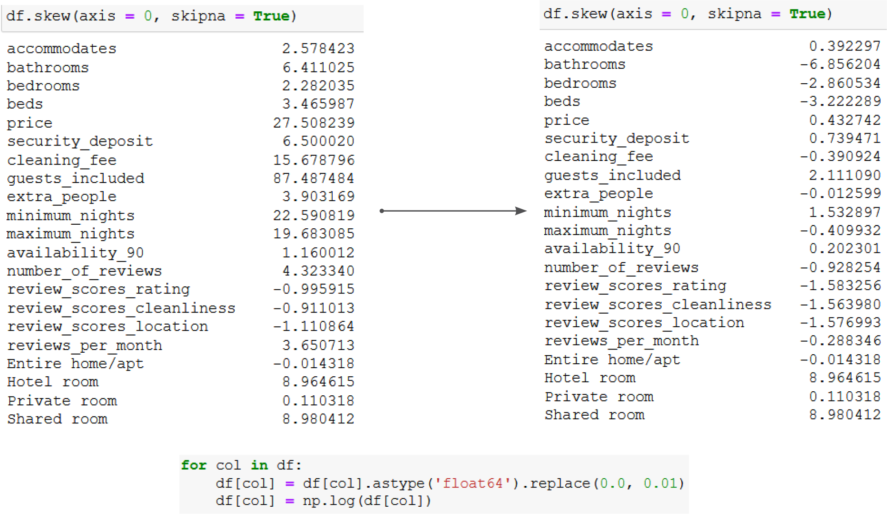
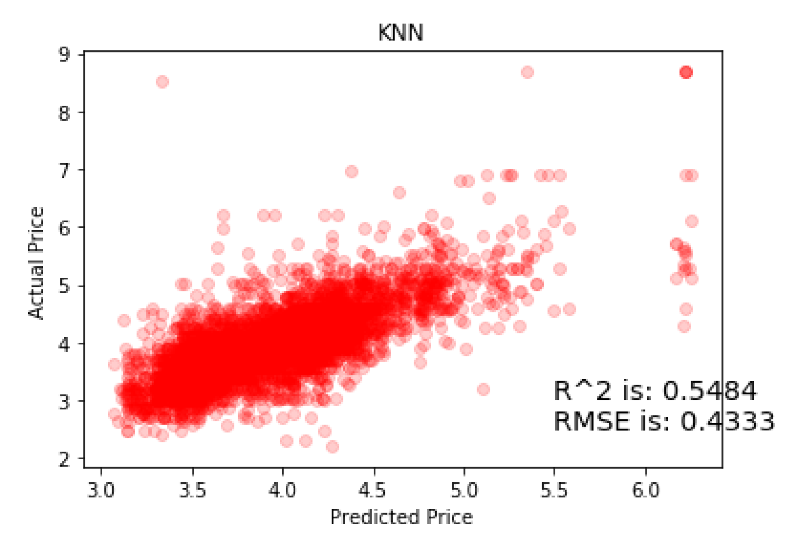
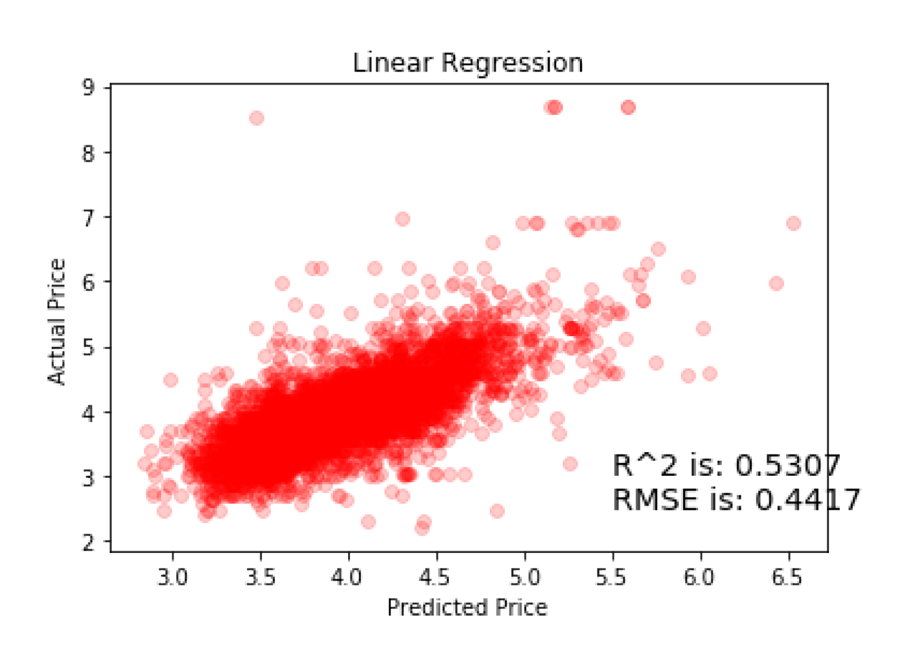
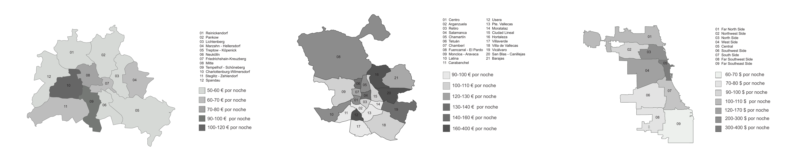
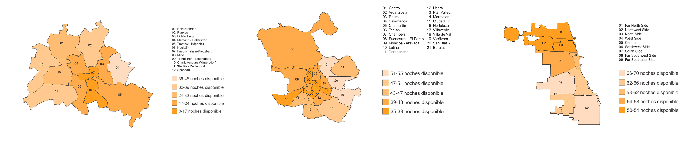
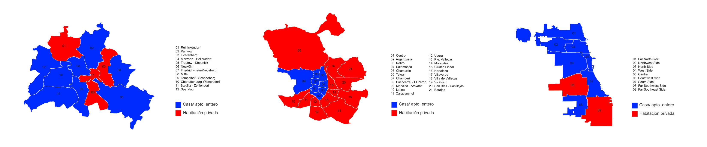
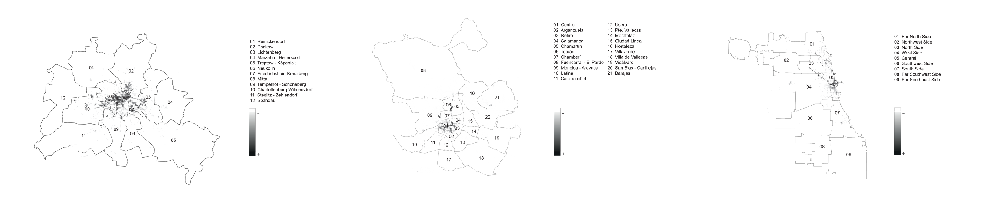

MACHINE LEARNING · DATA ANALYSIS · URBAN SYSTEMS
Data Analysis and Machine Learning for Understanding Contemporary Cities
python · pandas · scikit-learn · matplotlib · gis
TThis bachelor’s thesis explores how machine learning and data analysis can be used to understand patterns in cities. Using Airbnb data from Berlin, Madrid and Chicago, it looks at the relationship between listing characteristics, price and location, using prediction not only as an end goal but as a way to explore the patterns and limitations within the data.
The project moves through the full workflow: cleaning and transforming the dataset, training and comparing models, evaluating their performance, and finally mapping the results back onto the cities.
The workflow is built in Python, using pandas for data cleaning and transformation, scikit-learn for modelling, matplotlib for visualisation, and GIS tools for the spatial mapping in the final stage.
The Airbnb dataset combines many different types of information: price, number of bedrooms, room type, availability, reviews and location.
Before training any models, the data needs to be cleaned and transformed.
Missing values are handled depending on the variable, categorical features such as
room_type are converted using one-hot encoding, and strongly skewed variables are
log-transformed.
The numerical features are then standardised using StandardScaler so that variables
with larger ranges do not dominate the model.
StandardScaler
These steps make very different features easier to compare within the same model.
The first model is a K-nearest neighbours regression trained to predict nightly price from the processed listing data.
The dataset is split into 80% training and 20% testing data.
Rather than choosing the number of neighbours manually, cross-validation is used to test different
values of k. For the Berlin model, the best result is obtained with:

The model explains around 55% of the observed variance in price.
That is enough to show that listing characteristics contain useful information about price, while also leaving a large part of the variation unexplained.
To test whether the same relationship can be described with a simpler model, I trained a linear regression on the same processed dataset.

The difference is relatively small, but the KNN model performs slightly better.
What interested me here was not only which model had the better score, but how different models represent the relationship between the same variables.
Applying the same workflow to Madrid and Chicago produced broadly similar results. Even though the cities are very different, the selected listing characteristics contain a similar amount of information about price.
COMPARABLE STATISTICAL RELATIONSHIPS · DIFFERENT URBAN CONDITIONS
The last part of the project maps the data back onto Berlin, Madrid and Chicago.
Across the three cities, short-term rental activity intersects with existing patterns of centrality, tourism and socioeconomic difference.
Price, demand, accommodation type and the distribution of listings are compared across districts to see how the statistical patterns relate to the spatial structure of each city.

Airbnb prices broadly follow centre–periphery patterns, although the spatial distribution is different in each city.
Berlin and Chicago show stronger concentrations of high prices around central areas, while Madrid has a more dispersed pattern.

High-demand areas tend to cluster around central and well-connected parts of the city rather than only within the historic centre.
The pattern is different in each city, showing that similar variables can take very different spatial forms.

Entire homes and apartments are the most common listing type across the three cities, but their distribution varies considerably.
Berlin shows a stronger presence of private rooms, while Madrid and Chicago show different relationships between central and peripheral areas.

Tourist activity is concentrated in relatively small central areas, while short-term rental listings spread further into surrounding districts.
This suggests that Airbnb is closely connected to tourism, but its spatial footprint extends beyond the traditional tourist centre.
Urban Dynamics started with a fairly simple question: can Airbnb prices be predicted from listing characteristics?
But the project became more interesting once the models were compared across different cities and the results were placed back into their spatial context.
The workflow moves between data and space:
DATA → MODEL → EVALUATE → MAP → INTERPRET
For me, the interesting part is that machine learning is not only useful for making predictions. It can also be used to test relationships in the data and then ask how those relationships change once they are placed back in the real world.
In this project, similar model performance across Berlin, Madrid and Chicago does not mean that the cities behave in the same way. The spatial patterns behind those results are different.
That tension between statistical similarity and spatial difference became one of the main outcomes of the research.